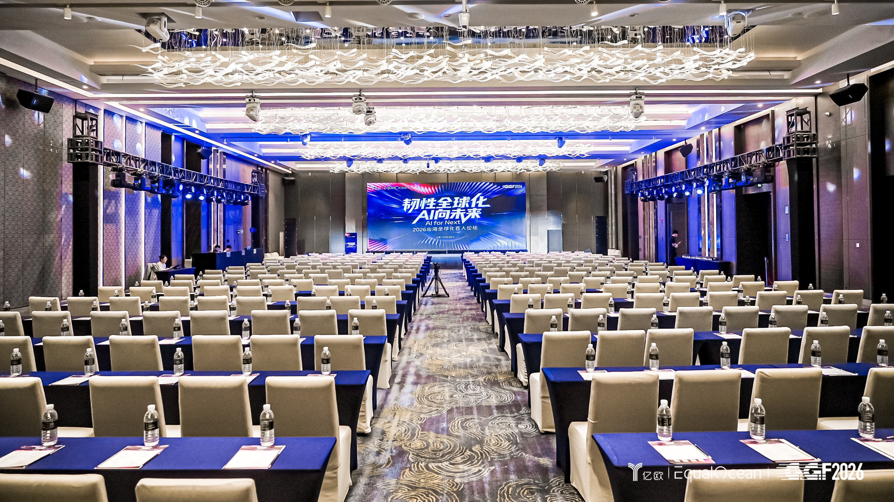
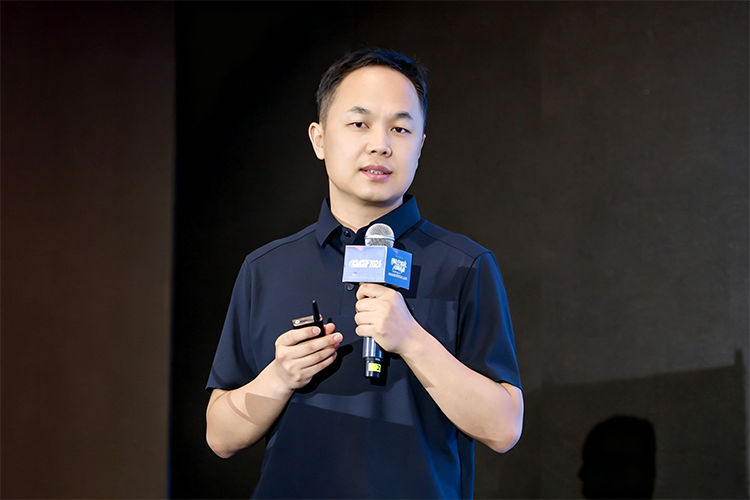
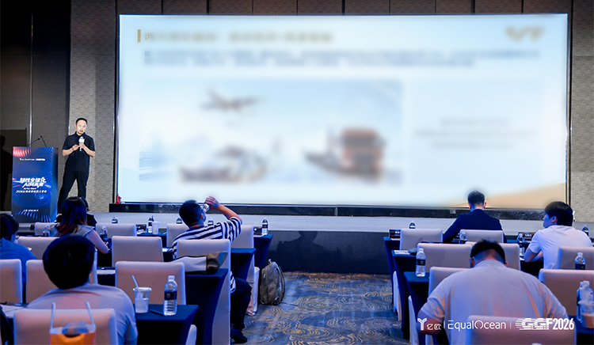
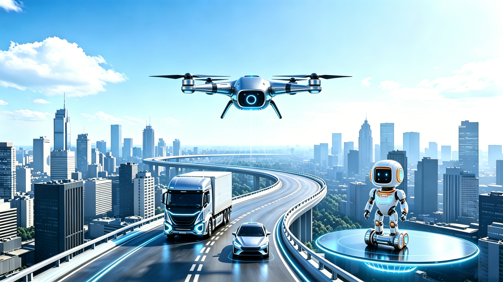
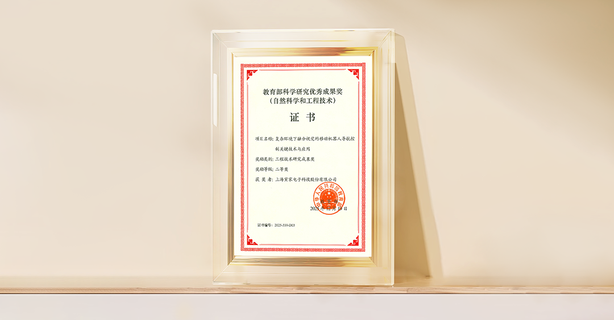
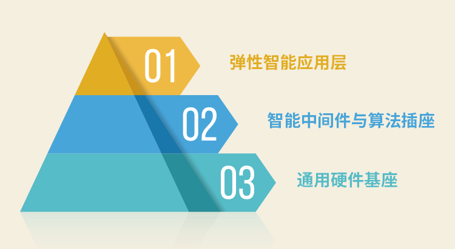

AI正全面重塑全球產業格局，如今中國企業出海已邁入全新階段。面對市場變革、技術迭代與日趨激烈的國際競爭，挖掘全新增長空間、構築差異化競爭力，成為出海企業的核心要務。
6月11日，由出海全球化智庫EqualOcean主辦的2026出海全球化百人論壇在上海圓滿舉辦。本屆論壇以“韌性全球化，AI向未來”為主題，聚焦AI引領的產業變革與全球化機遇，攜手各界共探中國企業高質量出海之路。

作為“出海全球化百人會”年度重要活動之一，論壇匯聚了全球化領域的企業家、專家學者、投資人及國際組織代表。
近年來，寅家科技加碼AI賦能，以“以自研科技，賦能全球智慧出行”為品牌使命，積極佈局全球市場，致力於以源自中國的創新科技，服務全球智慧產業發展，走出了屬於自己的“寅家路徑”。
活動現場，寅家集團智能座艙解決方案負責人包鵬志出席論壇，發表《從汽車智能駕駛到低空經濟、具身智能，以AI賦能、技術複用拓寬全球增量》主題演講，與行業代表共同探討中國智能科技企業如何依託AI技術創新、跨賽道技術複用能力，打開全球化全新增長空間。


全球藍海，趨勢所向
三大賽道，共同打開萬億級市場空間
當前，智能汽車、低空經濟、具身智能三大賽道前景廣闊，構築起體量龐大的新興產業市場。智能汽車是AI技術落地的核心場景，也是中國企業全球化的技術底座。摩根士丹利2025研報顯示，2030年全球高階自動駕駛市場規模將突破2000億美元；目前全球僅1/8車輛搭載智能駕駛功能，五年後滲透率將翻倍至1/4，行業進入高速增長期。
中國車企更是憑藉硬實力領跑全球。據《人民日報》（海外版）報道，2025年，三家中國車企成功躋身全球汽車銷量前十；多家權威機構看好長期發展：麥肯錫預測，2030年全球前十大車企中，中國品牌將佔據3至5席；瑞銀2025年最新研報指出，2030年中國車企全球市場份額將提升至三分之一。海外市場，將成為中國智能汽車產業鏈核心的利潤增長引擎。
此外，低空經濟、具身智能開闢了全新的增長空間。摩根士丹利預測2030年全球低空經濟市場規模預計突破3000億美元；根據《2026年未來產業十大賽道》報告，未來五年具身智能行業的複合增長率高達73%，2030年全球市場規模將達到2388億元。
背靠三大賽道的萬億級藍海市場，寅家科技以智能汽車為核心深耕技術，加碼人工智能，同步佈局低空經濟、具身智能領域，精準把握時代機遇，搶抓全球化發展紅利。

技術複用，寅家路徑
立足汽車產業，佈局“一次研發，多場景落地”
在寅家科技看來，智能汽車、低空飛行器與機器人，本質上都是“智能移動體”。產品形態看似不同，但在感知、定位、決策與控制等核心能力上高度共通。這意味著在一個領域經過大規模驗證的技術成果，可以花較少的成本，遷移至更多的產業場景。汽車產業多年積累的工程化能力、量產經驗、數據體系與供應鏈能力，為低空經濟、具身智能兩大領域發展提供有力支撐。
寅家科技將智能汽車全流程工程體系跨域複用，整套研發、量產、運維鏈路可直接適配飛行器、機器人等產品，依託成熟的硬件、測試與品控能力，研發週期縮減40%以上，有效降低海外落地的研發與試錯成本。同時，海量場景車載運行數據、零部件可靠性數據，能優化各類產品運行表現、降低故障風險，疊加完善的供應鏈與運營經驗，實現三大賽道協同出海。
自主可控的核心技術是跨域複用與規模化出海的關鍵。寅家科技憑藉全棧自研與三段式解耦架構，打造出適配全球市場的技術體系，可靈活對接各地法規要求，高效完成本地化定製。
全棧自研是寅家技術出海的堅實根基。公司實現底層算法、中間件到應用方案的全鏈路自主研發，打造VT-Sensing視覺感知、VT-Navi融合定位核心技術，研發的“複雜環境視覺融合導航技術”榮獲教育部科學研究優秀成果獎二等獎，技術實力獲得行業權威認可。公司持續深耕數智研發，自研的多幀動態降噪AI-ISP芯片，融合含ISP算法與AI模型驅動的3D降噪技術，在地下車庫、山區夜路等場景中實現低照度場景清晰成像。通過底層技術完全自主可控，自由拆解、重組、適配技術方案，擺脫海外芯片、算法廠商的技術捆綁，可根據歐洲、東南亞、拉美等不同海外市場的差異化需求，靈活定製產品方案，這是寅家科技高質量技術出海的核心優勢。

依託三段式解耦架構，寅家實現技術“一次研發、多賽道、多國家全球複用”。將整體技術體系拆解為通用硬件基座、智能中間件與算法插座、彈性智能應用層三大層級，通過自研中間件打造標準化可插拔算法插座，打破硬件平臺、算法模型、應用場景的強綁定關係，可兼容全球主流算力芯片，適配國內外乘用車、商用車快速落地海外無人機巡檢、低空飛行、工業機器人作業等各類場景。

當前寅家科技已經完成全球化佈局，進入德國、巴西市場。
AI正在重塑全球智能產業。產業變革之下，出海模式持續升級，從單一產品輸出向深度技術輸出，從商品銷售升級為整體解決方案交付。寅家科技以汽車產業成熟技術為根基，以技術複用為核心路徑，通過全棧自研構築底層能力，通過架構創新釋放跨領域價值。以源自中國的創新科技，服務全球智慧產業發展。
References
[1] Morgan Stanley. AI Is Coming to Your Steering Wheel[EB/OL]. (2025-08-21)[2026-06-11].
https://www.morganstanley.com/insights/articles/self-driving-vehicles-industry-growth.
[2] 人民日報海外版。憑藉新能源與智能化的先發優勢——中國三車企進入全球前十 [EB/OL].(2026-03-26)[2026-06-11].
https://paper.people.com.cn/rmrbhwb/pc/content/202603/26/content_30147326.html.
[3] 人民日報客戶端。麥肯錫預測：中國有望於2025年成為全球最大汽車出口國 [EB/OL]. (2025-11-29)[2026-06-11].
https://www.peopleapp.com/column/30050860008-500007227659.
[4] 環球時報。技術優勢助品牌轉型，海外銷售成關鍵動力，瑞銀研報：中國車企全球市佔率2030年有望達1/3 [EB/OL].(2025-12-18)[2026-06-11].
https://world.huanqiu.com/article/4PaNiFctXgy.
[5] 中國證券報，中國工信新聞網。低空經濟市場規模2030年有望突破2萬億元 [EB/OL]. (2025-11-24)[2026-06-11].
https://www.cnii.com.cn/cyjs/202511/t20251124_698373.html.
[6] 央廣網。《2026 年未來產業十大賽道》發佈 [EB/OL]. (2026-03-27)[2026-06-11].
https://www.cnr.cn/bj/sijh/20260327/t20260327_527564198.shtml.
[7] 環球網。摩根士丹利預測未來20年是飛行汽車的飛速發展期，中國或成全球最大低空交通市場 [EB/OL]. (2025-10-18)[2026-06-11].